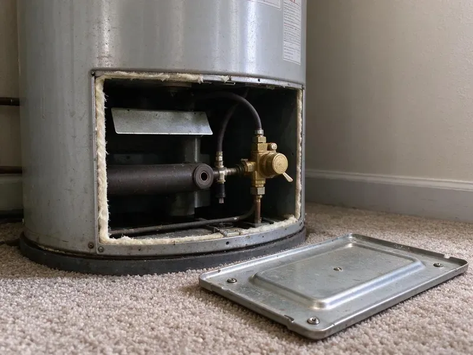

Water Leak Repair in Bloomington, MN
Water leak in Bloomington, MN? CNV Plumbing finds the source fast and fixes it without tearing up the room.
- Fast Leak Location Service
- Foundation Protection
- Stop Water Damage Early
- Licensed and Insured
Wet Spot in Bloomington, MN?
CNV Plumbing locates leaks before opening walls.
Bloomington, MN Leak Detection and Repair
CNV Plumbing treats every leak in Bloomington, MN as urgent. From dripping faucets to hidden pipe bursts, our team finds the problem. The repair is built to last, with the right fitting for the pipe material and a pressure test before the wall goes back together.
Work we handle every week:
- Copper, PEX, CPVC and polybutylene section repairs and reroutes
- PEX, copper and PVC repairs
- Section repairs in PEX, copper and PVC

Additional Plumbing Repair Services in Bloomington, MN
We offer expert plumbing repair services across Bloomington, MN to fix leaks, restore flow, and keep your system running smoothly.


Customers
Why Choose CNV Plumbing for Water Leak Repair in Bloomington, MN?
Pressure, scale and soil movement often work together to cause leaks. The repair covers the leak and what caused it. Sometimes that means a pressure regulator, a dielectric union or a reroute away from a rub point.
- Local Know-How, Our plumbers know the housing types and common plumbing problems in Bloomington, and match the repair to the home.
- Prompt Response, We respond fast to limit water damage and get the water back on.
- Durable Repairs, Quality materials and proven methods satisfy the codes in Bloomington.
Citywide Coverage
Slab homes, two-story houses and condos with shared walls across Bloomington are all part of our work. Quick scheduling is available in every neighborhood.
Experienced Team
Years of hands-on work come with the CNV Plumbing team. They handle everything from faucet drips to buried line failures.
Safety-First Approach
Your home and family stay safe during every leak repair. All work follows Minnesota plumbing code and safety standards.
Trusted Certified Bloomington Plumbing Services Professionals
At CNV Plumbing, we are proud to offer certified plumbing services throughout Bloomington, MN. Those papers on the wall mean something. Every repair, install and maintenance visit follows strict safety and quality rules, and the plumbers doing the work carry recognized industry credentials.
Call Us Now PHCC Plumbing Contractor Recognition
PHCC Plumbing Contractor Recognition Better Business Bureau (BBB) Accreditation
Better Business Bureau (BBB) Accreditation Angi Certified Pro
Angi Certified Pro ISO 9001 Quality Management Certification
ISO 9001 Quality Management CertificationSlab, Wall and Yard Line Leak Repair in Bloomington, MN
Commercial Water Leak Repair in Bloomington, MN
Retail spaces and offices in Bloomington, MN cannot afford a leak that ruins inventory or shuts down the restrooms for a full business day. CNV Plumbing repairs commercial leaks fast, with as little downtime as possible. We work on large systems and complicated layouts regularly. We can work after closing.

Emergency Leak Repair in Bloomington
Inches of water on the floor can build up in minutes from a burst pipe or a broken washing machine supply line. Emergency calls are answered around the clock. While the plumber is on the way, the dispatcher can help you close the main, and the repair starts as soon as the truck arrives. We can refer a drying company.
Fixture and Supply Line Leak Repair in Bloomington, MN
Angle stops, faucets, toilets and braided supply lines account for a lot of household leaks. These small drips rot cabinet floors and waste hundreds of gallons. Worn cartridges, flappers, fill valves and shutoffs get replaced, and old plastic supply lines get upgraded to braided stainless. Cheap insurance.
Emergency Water Leak Repair in Bloomington, MN
Burst pipes put water on the floor in minutes. CNV Plumbing runs emergency leak repair across Bloomington, MN around the clock. First the water gets shut off, then the break gets found and fixed for good, nights and weekends included. Know where your main shutoff is.
Slab Leak Repair in Bloomington
Older slab foundations often hide copper, PEX or even galvanized lines that have been rubbing against gravel under the floor for decades. We locate the leak with electronic listening gear and a thermal camera. Then we either reroute the line or open the slab at one spot. We also look for foundation damage.
Pipe Leak Repair and Replacement in Bloomington, MN
Galvanized, copper, PVC and PEX all leak for different reasons, from corrosion and freezing to a nail through the wall. The damaged section gets cut out and replaced the same visit. Fittings for each material are on board. Older homes with corrosion throughout may do better with a repipe built to current Minnesota standards, which also improves water pressure.
Fixture & Faucet Leak Repair in Bloomington
A dripping faucet wastes more water than people think, and a running toilet can burn through thousands of gallons a month. We replace washers, O-rings, cartridges and seals in kitchen and bath faucets, toilets, showers and hose bibs. We stock parts for the big faucet brands. Stains stop too.

Under-Slab Line Repair in Bloomington
Lines under a concrete slab wear through where they rub on gravel or rebar, or fail from pressure and soil movement. Typical signs are a warm floor, a spinning meter or cracked tile. After locating it, we either open a small section of slab or reroute the line overhead. You hear the tradeoffs before work begins.
Water Leak Repair Nearby in Bloomington, MN
An urgent leak needs a plumber with the tools to find it, not one who starts cutting holes and hoping. CNV Plumbing brings professional detection equipment on every leak call. You lose less drywall and less time.
Soil, water pressure and pipe materials combine differently in every neighborhood. Local plumbers find leaks faster. The repair uses fittings that match the existing pipe, so the new joint holds.
CNV Plumbing at a Glance
- Fully licensed plumbing team covering Bloomington, MN
- Same-day appointments and 24/7 emergency response
- Upfront, flat-rate pricing before work begins
- 4.8-star rated by 501+ Minnesota customers
Bloomington Map
Bloomington Information
- Population
- 87,398
- Area codes
- 952/763/612
- Service area
- Bloomington and towns within a 40 mile drive
- Nearby
- Edina, Burnsville, Eden Prairie, Eagan
Hard water, high street pressure and soil movement combine to cause hidden leaks in Bloomington, MN homes. Fast repair saves water and the house.
Talk to a Plumber
Call CNV Plumbing for reliable plumbing work done by licensed pros in Bloomington, MN.
Our Specialized Plumbing Services in Bloomington, MN
At CNV Plumbing, we handle the full list of plumbing services across Bloomington, MN. From leak detection to full system installs, our team works fast and charges fair prices on homes and commercial properties alike. Here are the core services we offer:


From Wet Spot to Dry Wall in Bloomington, MN
Our leak repair process stays simple, so you understand each step we take.
Tell Us What You See
Call (612) 712-9569 and describe what you are noticing, like a high bill or a wet spot. Detection visits get booked fast.
Locate the Source
We isolate lines with pressure tests and pinpoint the leak with acoustic, thermal and moisture tools. A flat price comes before any opening.
Repair and Verify
We make the repair, pressure test the line and confirm the meter stays still. Photos and notes are yours for insurance.
Frequently Asked Questions About Water Leak Repair in Bloomington
Simple fixture leaks often cost $150 to $400, while in-wall leaks run about $300 to $900 before patching and painting the drywall. Slab and yard line work usually runs $1,000 to $4,000. Pricing is set once the leak is found.
A jumpy water bill is the top clue. Running water sounds with every fixture off, stains on walls or ceilings, musty odors and soggy spots in the yard are others. Warm floor spots point to a hot water slab leak.
Simple fixture repairs take an hour or two. Burst pipe repairs or PEX line fixes can take half a day, and slab leaks may need a day or two for detection and repair when access is tight.
Workmanship is warrantied, and materials carry manufacturer coverage. If the same repair leaks within the warranty period, we fix it at no charge.
Copper, PEX, PVC, CPVC and galvanized steel are all common in Minnesota homes of different ages, and we repair each one. On the fixture side, Moen, Delta, Kohler and American Standard are routine.
Sudden, accidental damage like a burst pipe is often covered. Slow leaks from wear or corrosion are a different story, and your insurer can tell you what applies.
Most policies cover sudden water damage and sometimes the cost to access the leak, but not the pipe repair itself. Our photos and notes help with the claim.
Fixing a leaky faucet or a small section of exposed pipe usually does not need a permit in Bloomington. Bigger jobs like a repipe or a new main line usually need one, and we file it.
What People Are Saying About Our Plumbing Experts?

Paul B.
Our pit pump ran nonstop even in dry weather. The plumber found the check valve was stuck open, so the same water kept cycling back into the pit. New valve, new float switch, done in an hour. It runs quiet now.
Sump Pump · Burnsville, MN
Angela D.
Our sump pump quit during a storm and the water was an inch from the basement carpet. CNV Plumbing put in a new pump with a battery backup that same evening. We have had two heavy rains since. It kicked on both times.
Sump Pump · Eden Prairie, MN
Lisa C.
Water was pouring out from under the washing machine on a holiday weekend. CNV Plumbing talked me through closing the valves over the phone and had a plumber at the house within ninety minutes. It was a burst fill hose.
Emergency Plumbing · Edina, MN
Robert G.
The camera showed a full break in our clay sewer line near the street. CNV Plumbing replaced it with a trenchless pipe burst, so the only digging was two small pits in the yard. They let us watch the footage before and after.
Sewer Line Replacement · Edina, MNKevin O.
Before buying our house I paid for a sewer camera inspection. CNV Plumbing found a belly in the line that held standing water about forty feet from the cleanout. We used the video to get the sellers to fix it before closing.
Sewer Camera Inspection · St. Louis Park, MN
Laura S.
Our 40 gallon tank started leaking from the bottom after thirteen years. The tech hauled the old one out, set a new unit with a fresh expansion tank, and had hot water running in about four hours. He took the old tank with him too.
Water Heater Replacement · Burnsville, MN